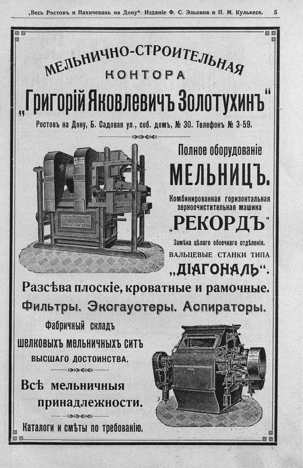

Лист источника 11
Скан

Распознанный текст
„Весь Ростовъ и Нахичевань на Дону“. Изданіе Ф. С. Элькина и П. М. Кулькеса. 5
МЕЛЬНИЧНО-СТРОИТЕЛЬНАЯ
КОНТОРА
„Григорій Яковлевичъ Золотухинъ“
Ростовъ на Дону, Б. Садовая ул., соб. домъ, № 30. Телефонъ № 3-59.
Полное оборудованіе
МЕЛЬНИЦЪ.
Комбинированная горизонтальная
зерноочистительная машина
„РЕКОРДЪ“
Замѣна цѣлаго обоечнаго отдѣленія.
ВАЛЬЦЕВЫЕ СТАНКИ ТИПА
„ДІАГОНАЛЬ“.
Разсѣва плоскіе, кроватные и рамочные.
Фильтры. Эксгаустеры. Аспираторы.
Фабричный складъ
шелковыхъ мельничныхъ ситъ
ВЫСШАГО ДОСТОИНСТВА.
Всѣ мельничныя
принадлежности.
Каталоги и смѣты по требованію.